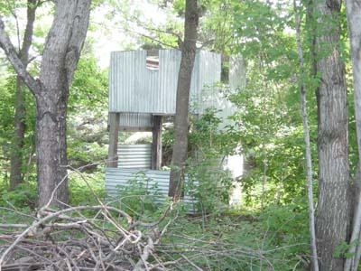

< Back
The Outpost was started about a month after The Alamo was completed. Fighting over one tower is intense, what would two be like? The Outpost is still not officially completed, but it is useable.

See more pictures and information